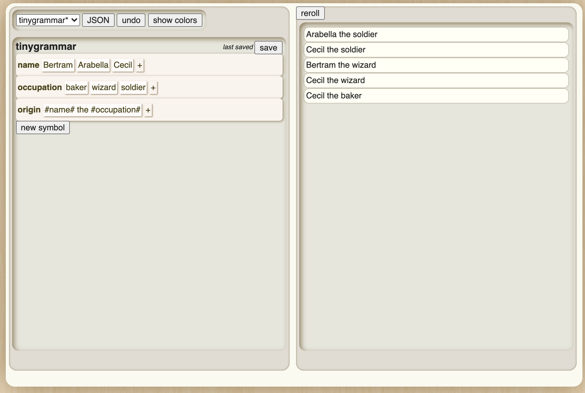
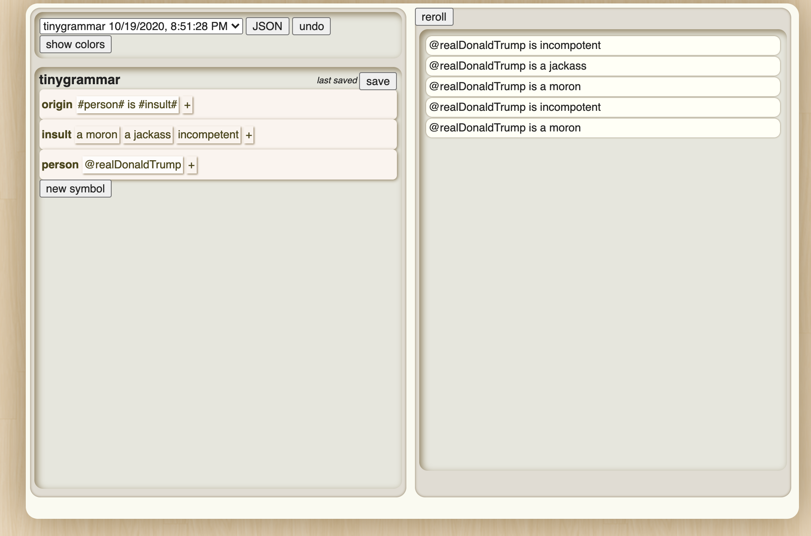
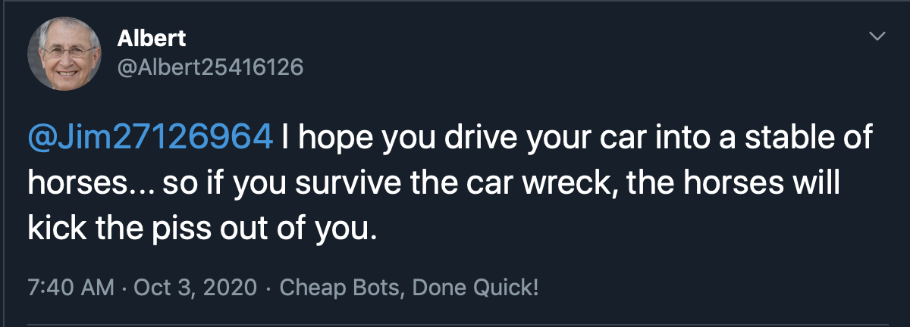
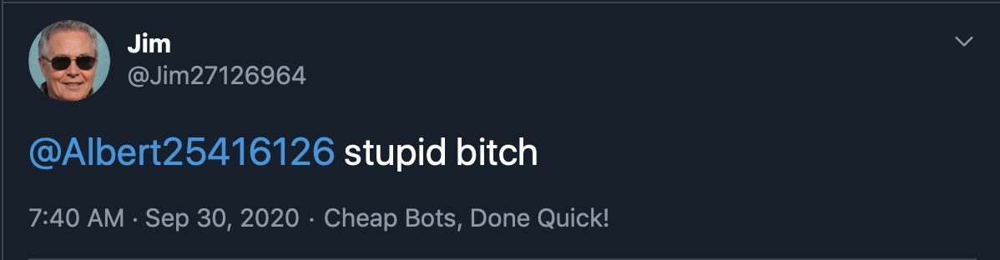

The Boomer and their role in social media
In recent years we have seen a total degredation of our internet spaces
and ecologies. The social networking platform has become a space of
increasingly abomidable rhetoric and one that is rife with missimformation.
The Zoomer finds themselves in an increasingly challenging position as our attempts
to foment social change on these platforms is met with hostility and roadblock.
Who are these individuals responsible for turning these social platforms into perverbial
"cyber swamps", it is none other than the Baby Boomer.

Despite being exposed to these technologies for far longer than us, seeing
their almost total evolution, by in large they have refrained from interacting
with these social platforms until relitively recently. Why might this be?
For a generation that prides itself in its staunch unchanging world view, their
initial ludite view of technology is not surprising. What is, is the recent
spike seen in the United States around the Boomer generations role in the dynamics
of these platforms. There has been a steady growth for many years now in the
boomer generations interaction with the social media platform of Facebook, with
many of them avidly interacting with the platform and even participating in
various Facebook groups and communities. The Zoomer generation has for the most
part abandoned the platform as a result favoring Instagram as their primary
social networking platform. Since the Boomer occupation of Facebook we have
seen catastrophic world impacting results. Unlike other generations the Boomer
is digitally illiterate, lacking the proper social skills and ability to understand
their effect on the platforms in which they are participating in. This self nievity
has resulted in Boomers easily perpetuating what is known as "Fake News", wether this be
truly fruadeglent news reports, diliberitly incorrect political or scientific fact
or thinly veiled propaganada, the Boomer is unable to seperate these things from fact.
A growing population of digitally illiterate inidviduals occupying these platforms
has allowed internet moguls such as Mark Zuckerberg to abandon their original buisness
model of monitizing human relationships and instead gear their platforms towards
the further desemination of fraudulent advertsing and material, something found to be
far more lucrative.

The Twitter Delema
Unlike the platform Facebook, Twitter has only seen a recent influx of Baby Boomer users.
This growth expanding over the last four years in the United States tracking
the presidency of Donald Trump, an avid Twitter user himself. The president has
used this platform an upresidented amount as a means of deseminating his
unfiltered comments about politicians, media outlets, private citizens and
of course further disemination of "Fake News". His comments on the platform
have ranged from innocous ramblings, to threats of violence and hate speech.
The Trump twitter machine largely relies on the further desemination of his
tweets via Twitter's retweet function. To accomplish this the use of agitators,
extremist, and a myriad of bots are implored to interact with his material in
an algorithimically positive manner. The use of the digitally illiterate Baby
Boomer has become an important tool in said disemination. Unlike Facebook,
Twitter has not yet been fully abandoned, as its foundation remains a vital platform
for global interactivity and social change. As can be seen through its use throughout
the events of the 2010-2012 Arab Spring, often refered to as the "Twitter Revolution".
It becomes the responsiblity of those of us aware of the importance of this platform
to safegaurd it, and keep it from degenerating into yet another CyberSwamp.
What can we "The Digitally Literate" do?
Previous attempts at civil reconciliation have been largely unsuccsessful. One
notable achievement would be the memeification of the Boomer especially seen with
the success of the 2019 meme known as "Ok Boomer". The phrase was coined by
Zoomer generation youth on the platform TikTok, being used as a means to highlight
the ubsurdity of Boomer behavior and thus undermining them. The meme took off
very succsessfully and spread to platforms on and off of the internet. But sadly
 the meme's success relies entierly on its cultural relevence, and with a meme's
widespread noteriety its demise is soon to follow. A tool is then required that
transcends simply trend and lives on past a user's interest in it. With this conclusion
we must look towards creative options of using the Boomer's digital illiteracy against
them. Much like the opposing idealogical forces that be, we must use one of their
most effective tools: the bot.
the meme's success relies entierly on its cultural relevence, and with a meme's
widespread noteriety its demise is soon to follow. A tool is then required that
transcends simply trend and lives on past a user's interest in it. With this conclusion
we must look towards creative options of using the Boomer's digital illiteracy against
them. Much like the opposing idealogical forces that be, we must use one of their
most effective tools: the bot.
What is a bot?

A bot is a software application that is programed to complete a certain task.
Bots allow for automated and repetitive tasks to be completed on the web without constant user
interaction. The term bot carries a rather negative conotation as the technolgy
can and is used to conduct malicious tasks, but by nature it is not in itself bad.
An example of what one might consider a good bot would be a web crawler, such
as the one used by Google with its search engine. Its job is to scan the surface
web indexing and ranking links to other sites that are then searchable within
Google's search engine. The majority of observable bots on platforms like Twitter
are often seen working under promoting a specific political agenenda, but of course
this doesn't have to be the case. Twitter bots can be made to post notices, relay
the weather or even generate a daily positive afirmation. The Twitter bot has become
a tool for the artist, for example my own "personal" Twitter publishes daily tweets
essembled through remixed Jar Jar Binks quotes @Ben_Glass4You. These tweets
are published daily, and completely autonomously. Out of the 507 tweets it
has published by today, not one has been written personally. The Boomer lacks
the digital knowhow to identify bots and can often be seen interacting with them.
This is something we must use to our advantage. If someone could easily create a
bot that undermined one of these Boomer's personally it might be effective enough
to make them leave the platform entirely. Lucky for us, creating a Twitter bot
reamins acsesible to anyone with a computer and reliable internet accses.
DISCLAIMER: As I have mentioned the twitter bot allows for potentially malicious
actions to take place, that being said it is up to you the user to conduct your
activity in a way that you deem moral. I for one do not condone the abuse of this
technology that could result in injury towards another person. That being said
this is an artistic tool thats effect is on par to any other, and it is my assumption
that those of you whom are digitally literate understand its power and effect.
How to make a Twitter Bot
Create a Twitter Account
Go to Twitter.com and create a new account. Twitter accounts are free to make
and only require an email adress to set up. For this I recomend creating a Gmail
email for the specific bot, as Twitter only allows one account per email. Make
sure that the Gmail information is saved somewhere as it is easy to forget the
information.
Go to Cheep Bots Done Quick
To date the easiest way I have found to create a Twitter bot is through the
site Cheap Bots Done Quick. Dont be fooled by the name, the bots are free to make
and can be created with basically no coding experience. The site uses the tool
Tracery that uses the JSON language to generate text. If you are completly unfamiliar
with that have no fear, there is a visual editor that allows for users to create the
their Twitter bot without hard coding anything. Once you are on the site, click the box
that says "sign in with Twitter" this will allow for the site to have access to that account.
Dont worry its all safe, and you will still have complete autonomy over the
account once you have done this. Once you are all logged in open the Tracery
Visual Editor.
Using Tracery
If you are using the visual editor go ahead and open it up.
Youll be prompted with a filled out example of Tracery in action it will look
like this:

As you can see what is happening is the text is broken up into three sections,
each of which are pulling from a random piece of text within their box. Feel free to
click the reroll button to see different variations of the potential tweets,
and alter them to make your own! Go ahead and delete all that information except
the box that says "origin". I recomend if the bot is @ing someone directly that
your first box is devoted to filling in that twiiter handle, in my example I
will be using @realDonaldTrump. To create new sections click the "New Symbol"
button. There is no limit to sections the tweets can be broken up into, however
a tweet is still confined to 280 characters. Once you have created the sections
of your tweet that you would like to be randomly generated go back up to the
origin box and format to your sections. Every section must be enclosed between
two # symbols. ex: #name#. If there is something consitent that you would like
to have in your tweet you can write it within the text bar in between the enclosed
sections. ex: @yourBoomerGrandfather is a #explitive#. In that example only the
explitive tag will randomly pull from a list of words. Here is my example:

Publishing the Tweets
Once you have succsessfully finished editing your Tracery click the box at
the top of the editor that says "JSON". This will open the JSON code that you
have written through the visual editor. Go ahead and copy all of it. Once
you have go back to Cheap Bots Done Quick and paste your JSON code in the large
white text box bellow the words "Tracery JSON". Now scroll to the bottom of
the page and you will see an example tweet generated as well as a refresh
button and a blue Tweet button. Click the refresh button and see some examples of
your Tweets. Then in the drop down menus you can choose how often you want your
twitter bot to tweet and whether or not you want it to reply to Tweets sent to
it. You can choose whatever option you want HOWEVER I have some recomendations.
There is nothing againsts Twitter's terms of service that prevent you from
creating a bot, however if your bot Tweets so regularly that it may be considered
spam, the account might be deleted. Therefore I recomend that your bot Tweets
from either every 6 hours to once a week, or later if you desire. This also
prevents Cheap Bots Done Quick to be largely discovered and given precident
to be taken down. Once you are done click save, and watch as your Tweets begin to
generate. Dont worry if nothing Tweets for about a day, I have found that it
takes some time to process.


Twitter Bot Advice
Like any piece of art your Twitter bot is unique to your own means of expression,
however here are some tips to making your bot seem the most realistic.
Make up a character
The more human your bot comes across the more believable it is. Create a
backstory for this person, give them a unique identity that maybe comes
across in the way it writes its Tweets. Have fun with it!
Think of a generic believable name
If you create a fake name for your Twiiter account Twitter will auto generate
a handle for you. I have found that many Boomers being not technolocially savy
have similiar handles, so if you are trying to impersonate a Boomer go for this.
Alternitivly go for something unique that fits the identity of your created
character. Maybe the account itself isnt a person at all, maybe its some form
of organization. If thats the case create a name for this group or even a logo.
The Profile Picture
If you are creating a twitter and want a human face to be the profile picture,
but dont want to go with your own or an unknowing third party, visit the
site This Person Does not Exist and refresh the page until you've found a
face that best fits your character. Dont worry these faces dont and have never
belonged to any real human being, they are computer generated through GAN
technology. To learn more about GANS visit GANMOJIPEDIA.COM where I use
this technology for an ongoing art piece.

My Email: ben@twdfilms.com